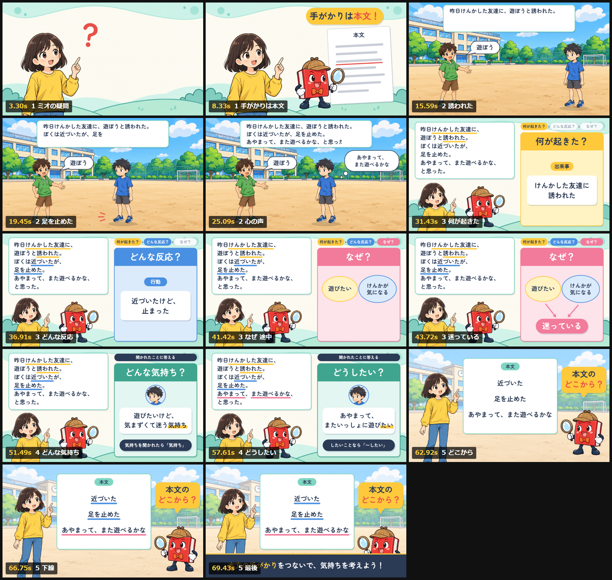

小学5年生向け
気持ち探偵になろう！
主人公の気持ちは、「自分なら」ではなく、本文の手がかりから考えよう。
1分10秒1920×1080 / 60fps声：ミオ・ブック・ナレーター動きと音はコードで生成
ねらい
「主人公の気持ちって、どう考えるの？」というミオの問いから始まる。探偵のブックと一緒に短い物語を読み、「何が起きた？」「どんな反応？」「なぜ？」の順に本文をたどると、主人公が迷っていることが見えてくる。最後は、答えのもとになる言葉が本文のどこにあるかを確かめる。
- 例文はずっと画面に残す質問と答えのあいだも本文を左に置いたままにして、手がかりと答えを見比べられるようにした。
- 出来事は黄色の線「何が起きた？」の答えになる言葉。けんかした友達に、誘われた。
- 行動は青の線「どんな反応？」の答えになる言葉。近づいた、足を止めた。
- 心の声はピンクの線「どうしたい？」の手がかり。あやまって、また遊べるかな。
場面
| 場面 | 見せるもの | 画面の文字 |
|---|
| 1 答えはどこにある？0:00 | 首をかしげるミオの横に「？」。ブックが本文の紙に虫眼鏡を当てる | 手がかりは本文！ |
| 2 短い物語0:11 | 校庭の場面。例文が読み上げに合わせて現れ、主人公が友達に近づいて、足を止める | 遊ぼう／あやまって、また遊べるかな |
| 3 三つの質問0:27 | 左に例文、右に質問カード。答えるたびに本文へ下線が増え、二つの気持ちが「迷っている」につながる | 何が起きた？ → どんな反応？ → なぜ？ |
| 4 聞かれたことに答える0:45 | 「どんな気持ち？」と「どうしたい？」で、答えの終わり方が変わることを見せる | 気持ちを聞かれたら「気持ち」／したいことなら「〜したい」 |
| 5 本文でチェック！0:59 | 手がかりの三つの言葉に下線。ブックが「本文のどこから？」と問いかける | 本文の手がかりをつないで、気持ちを考えよう！ |
主な場面

画像をタップすると大きく見られます。書き出し前に確認した14コマ。この一覧を見ながら、文字の大きさや人物の向きを直してから動画にした。
つくり方
- 台本・絵コンテ・イラストを用意する。1分の台本と8カットの絵コンテ、人物4枚と背景2枚のイラスト素材を先に作った。
- 声を合成する。17行のセリフをGemini TTSで1行ずつ音声にした。ミオ・ブック・ナレーターで声を分け、「不思議そうに」「ひらめいて」のような演技を行ごとに言葉で指示。読み間違えやすい漢字はひらがなで渡した。
- 画面をコードで描く。HTML Canvasで「時刻tのときの画面」を関数として書き、各行の声の長さから時間軸を組んだ。イラストは動かさず、移動・表示・下線と、話している人が小さくはずむ動きで見せる。
- 静止画と下見で確かめる。主な場面を一覧にして見た目を直し、ブラウザで音つきの下見を再生して、声とタイミングを確かめた。
- 音を付けて書き出す。効果音とオルゴール風のBGMをPythonで合成し、声の間はBGMを小さく。8,392コマを描いてffmpegで60fpsのMP4にした。
制作はClaude Code上で行い、画面・声・音・書き出しはコードとして残してあるので、台本を直せば同じ手順で作り直せる。